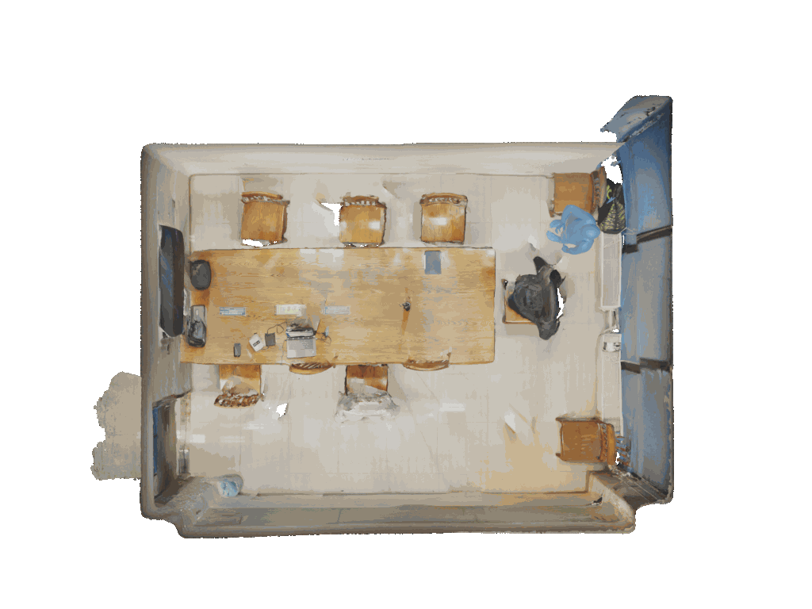
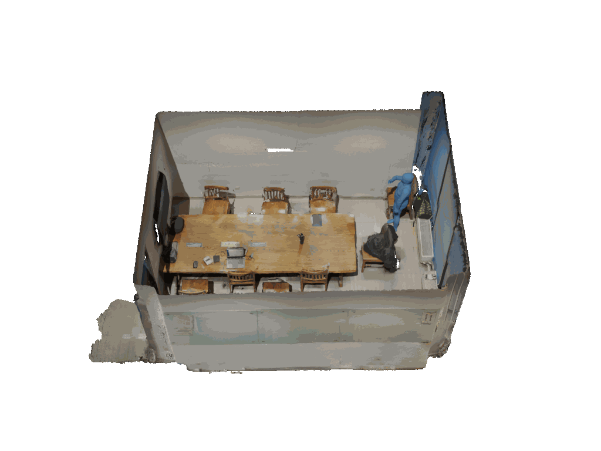

👑 Abstract
3D open-vocabulary understanding is a fundamental task in computer vision, as humans naturally describe the 3D world using language. Although prior works have attempted to bridge the gap between natural language and 3D representations, this task remains highly challenging due to the implicit and ambiguous nature of human instructions. Recent advances in large vision-language models (LVLMs) have demonstrated impressive capabilities in performing semantic reasoning over 2D images. In this paper, we introduce REALM, an LVLM-powered framework for 3D reasoning. We focus on addressing one of the most critical challenges in 3D understanding—3D reasoning segmentation. Built upon 3D Gaussian Splatting (3DGS), REALM lifts image-level reasoning into 3D space by combining a LVLM-based Visual Segmenter (LVSeg) with a Global-to-Local Grouping (GLGroup) strategy. LVSeg leverages the semantic priors of LVLMs to generate reasoning-aware 2D masks, which are subsequently propagated and refined in 3D via GLGroup. This design enables REALM to reason about spatial relationships, resolve ambiguous descriptions, and understand contextual cues across multi-view inputs. Furthermore, REALM supports a range of 3D interaction tasks, including object removal, replacement, and style transfer. Extensive experiments show that REALM achieves state-of-the-art performance in interpreting implicit instructions on our manually annotated LERF and 3D-OVS benchmarks.
📺 Video
🏃 we propose GAP3DS, an affordance-aware human motion prediction (HMP) model that enhances realism and accuracy in real-world 3D environments.
🥳 GAP3DS's Results

GAP3DS does a good job at keeping both the path and the movements smooth. The last position fits well with the earlier ones, making it look like a natural and continuous action, especially when it's about picking up the box.

GAP3DS does a good job at keeping both the path and the movements smooth. The last position fits well with the earlier ones, making it look like a natural and continuous action, especially when it's about picking up the box.

GAP3DS does a great job of finding its way around the table to get to the target chair. It predicts movements that make sense and stay true to what actually happened. The path it follows is close to the real one, and the poses it creates for sitting down are spot-on. This results in a smooth and realistic sequence of movements that respects the space and objects around it.

GAP3DS does a great job of finding its way around the table to get to the target chair. It predicts movements that make sense and stay true to what actually happened. The path it follows is close to the real one, and the poses it creates for sitting down are spot-on. This results in a smooth and realistic sequence of movements that respects the space and objects around it.
😇 SIF3D's Results

SIF3D has trouble with both where things should go and how they should move. It doesn't guide objects around obstacles well, so it misses important actions with the target object. Also, SIF3D has issues with reality, like letting the subject go through the table, showing it doesn't understand space and shapes well.

SIF3D has trouble with both where things should go and how they should move. It doesn't guide objects around obstacles well, so it misses important actions with the target object. Also, SIF3D has issues with reality, like letting the subject go through the table, showing it doesn't understand space and shapes well.

SIF3D accurately predicts the trajectory but encounters significant issues with pose continuity. The final pose appears disconnected from the preceding motions, resulting in an unnatural and disjointed sequence, especially when attempting to interact with the box on the table